Фрагментированный визуальный стиль
Разные подходы к изображениям и графике создают ощущение несобранного продукта и снижают доверие к бренду
New visual language for Finam that improved consistency across product pages
Finam is one of Russia’s largest brokers, offering a wide range of investment products. As its web platform evolved, the visual style became increasingly fragmented. A new approach to page design was needed to create a more cohesive and recognizable visual identity.
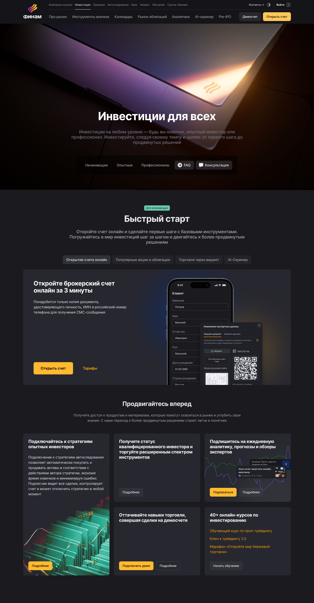
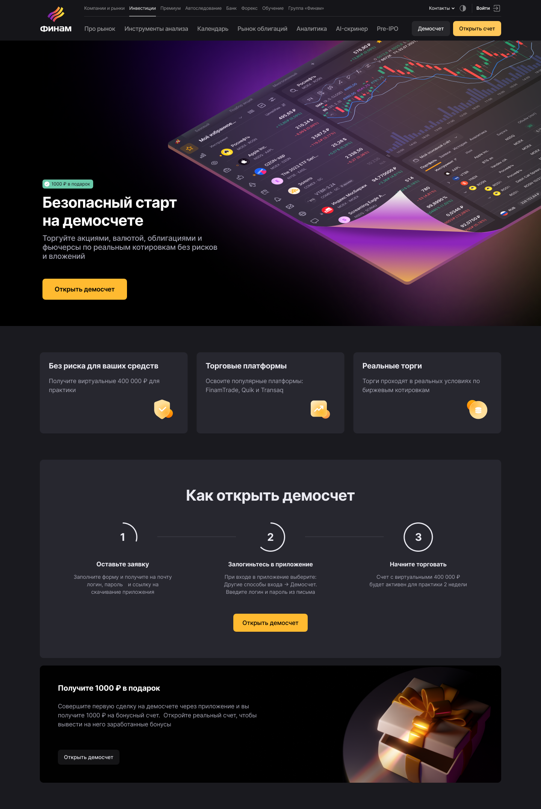
Разные подходы к изображениям и графике создают ощущение несобранного продукта и снижают доверие к бренду
Пользователю сложно быстро считывать главное — акценты расставлены неочевидно, внимание рассеивается
Визуал не формирует ощущение технологичности и премиальности, которые ожидаются от финтех-продукта
The central visual element is a beam of light revealing key objects from the darkness. This principle defines the imagery: directional lighting creates focus, depth, and atmosphere while emphasizing the brand’s technological identity.
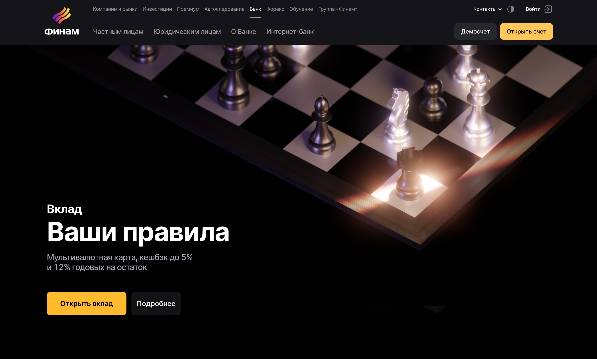
To speed up page creation, a system of reusable blocks was developed for different content types, including cards, grids, informational sections, and visual layouts. These ready-made blocks adapted to different needs, and kept visually consistent.
Reusable components were created to handle dynamic data and integrated into the corporate website builder. They can be used across multiple pages, speeding up development and simplifying content updates.
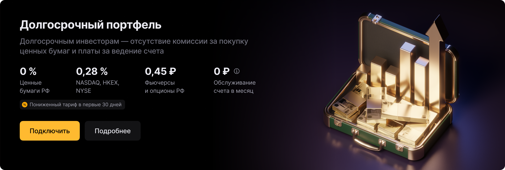
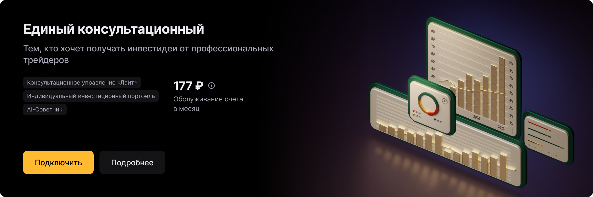
The new visual style brought together pages across different products while preserving their individual identities.
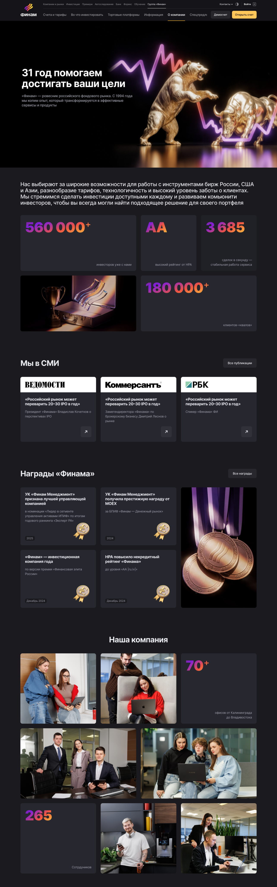
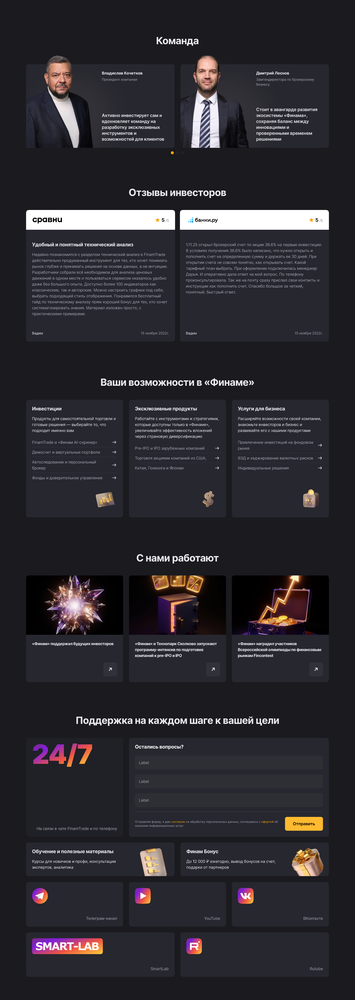
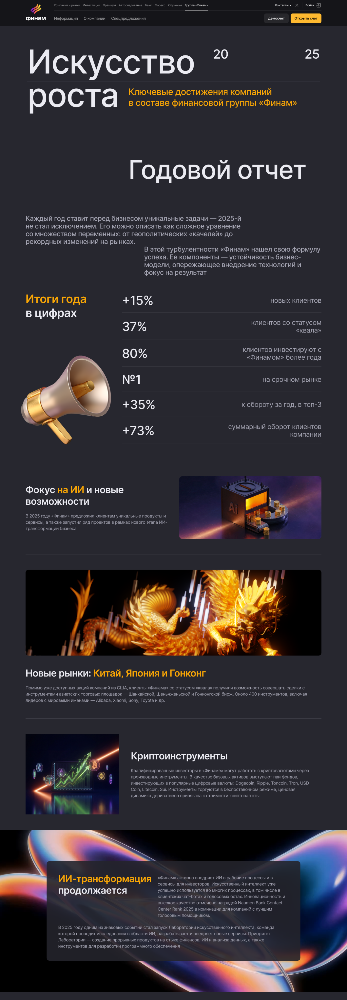
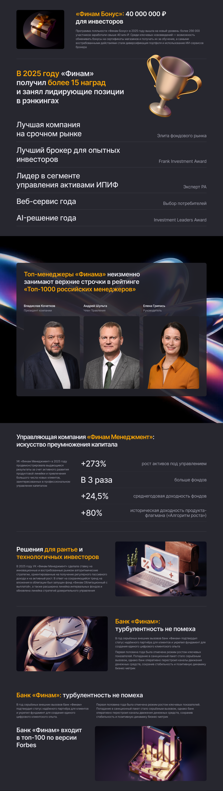
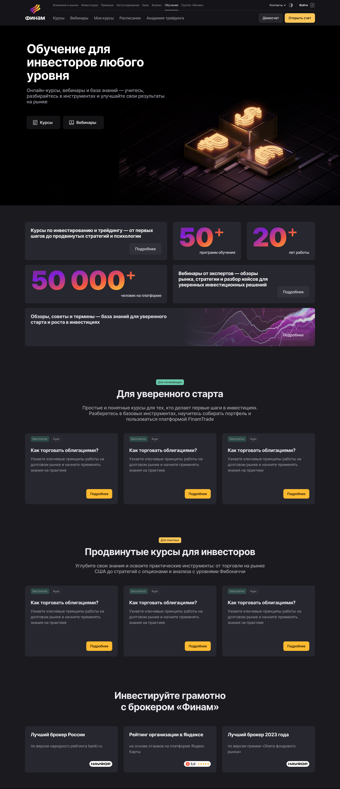
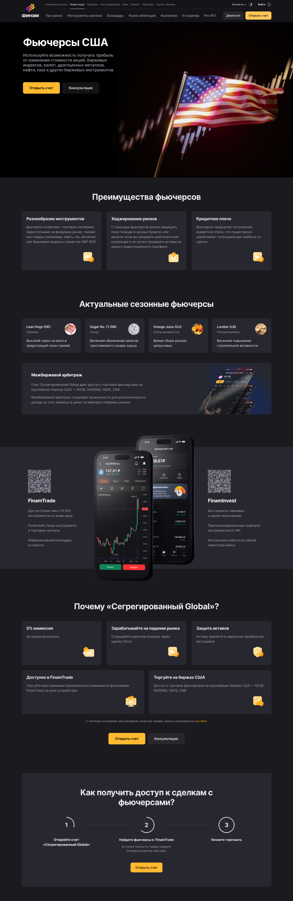
Three months after launching the redesigned pages, we analyzed key performance metrics and observed the following results:
Page production time
Faster content updates
Engagement rate
Lead generation